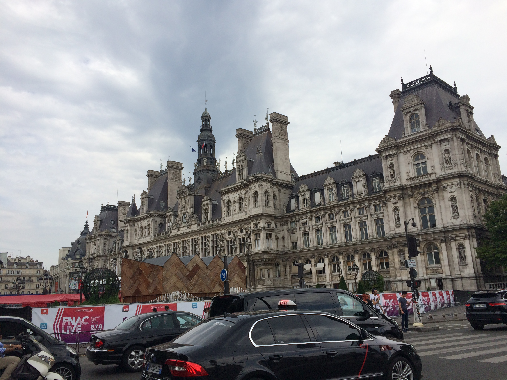
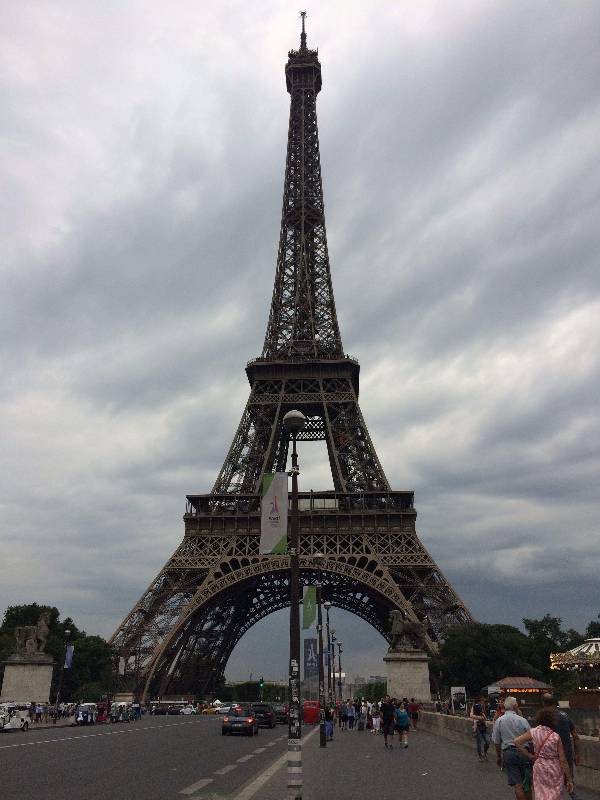
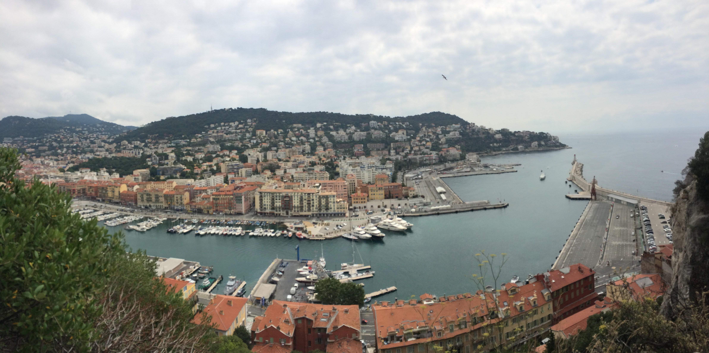
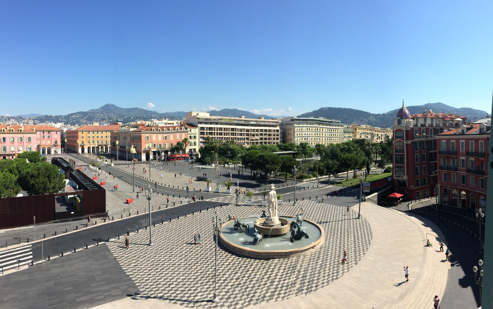
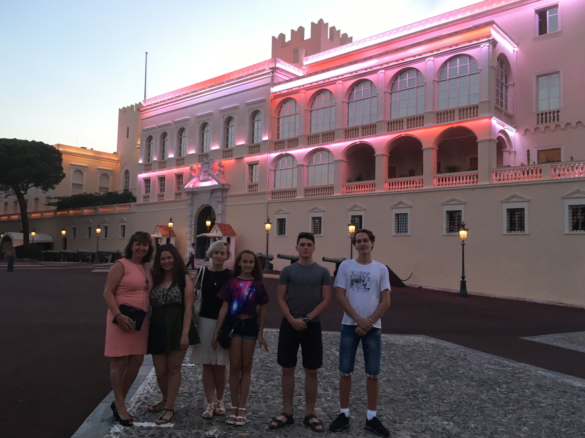
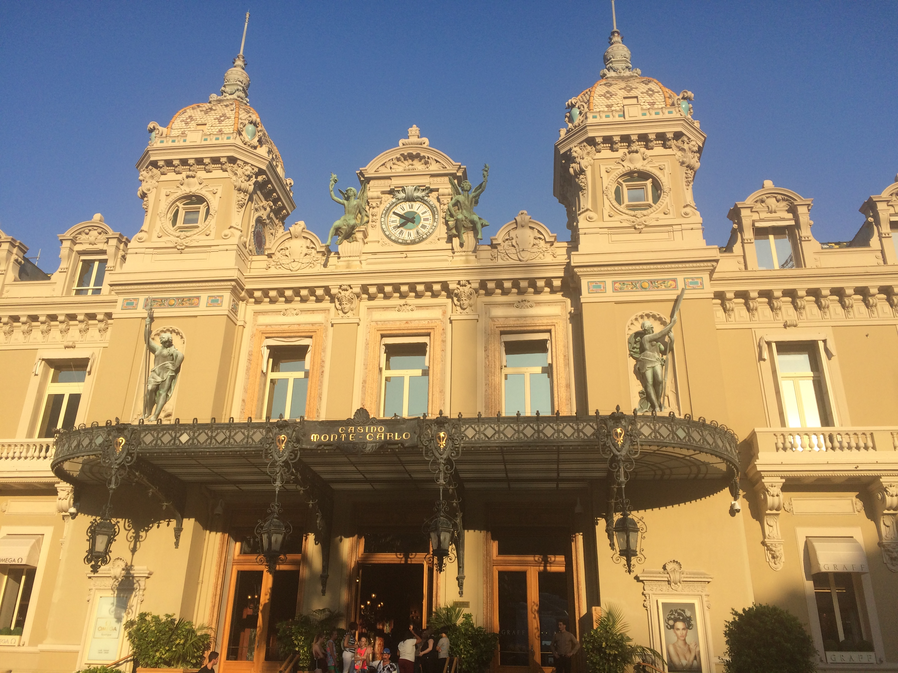

| Франція |
| Париж |


|
Париж-столиця Франції, її культурний, туристичний, політичний та
економічний центр. Крім цього, він очолює список найбільш романтичних міст
світу. Ще Париж називають «столиця моди», чи насправді це так? У мене був
лише один день, щоб це перевірити, але я вже можу робити деякі висновки.
Париж, це насправді чарівне місто зі своїми особливостями. Кращими місцями
варто назвати не тільки знамениту Ейфелеву вежу, а й Лувр, Єлисейські поля,
Тріумфальну арку. Під час подорожі можна просто насолодитися яскравими
старовинними будівлями, парками, скверами й садами.
Найвідоміший музей Парижа - Лувр, з десятками тисяч скульптур, картин,
ювелірних прикрас, які неможливо обійти за один день. Для того, щоб
потрапити в цю скарбницю, ми простояли в черзі декілька годин. Але він все
одно залишає незабутні враження. З чим у вас асоціюється Париж? Так, з
Ейфелевою вежею, справжнім символом французької столиці. Незважаючи на
величезні черги з туристів, обов'язково треба піднятися на вежу щоб побачити
панораму всього міста - видовище незабутнє. А от про столицю моди я скажу
інше. Так, в Парижі багато модних домів, брендів, дизайнерів, але люди на
вулицях та в метро одягаються дуже просто. Люди в Франції, до речі, як і в
інших місцях Європи вважають, що головне в одязі - це комфорт.
|
| Ніцца |


|
Ніцца- столиця Лазурного берегу Франції. Місто знаходиться в горах біля моря. Ніцца славиться своїми чудовими пляжами та прекрасними краєвидами. Це місто дуже популярне серед туристів з усіх країн світу, навіть Японії. Ніцца- це також найбільший круїзний порт на півдні Франції. У порту і його околицях сьогодні можна побачити величезні круїзні лайнери, пороми, десятки розкішних яхт і невеликі рибальські катери. На мою думку плюс Ніцци в тому, що можна не тільки відпочити на пляжі на березі Середземного моря, а й прогулятись по місту та побачити багато цікавого. Ніцца - друге місто Франції за кількістю музеїв. Центральна частина міста - Площа Массена, на захід від неї розташоване нове місто, а на схід - Стара Ніцца, багата на вузенькі цікаві вулички, старовинні будинки, затишні ресторанчики. Серце Ніцци - набережна Променад - дез - Англе, найкраще місце для прогулянок та вечірнього відпочинку. В цей город, з його краєвидами та місцевим колоритом закохуєшся з першого погляду.
|
| Королівство Монако |


|
Королівство Монако-друга, найменша за розміром, після Ватикану, суверенна держава, на березі Середземного моря, за 20 км від Ніцци. Відноситься до країн «карликів». Розташоване поблизу Лазурного берега Франції. Має конституційну монархію. Монако в першу чергу асоціюється з міліонерами.
Цей город без сумніву є міжнародною столицею розкоші. Всі найзнаменитіші імена моди ви знайдете тут, в Монако; висока мода, парфумерія, ювелірні прикраси, самі розкішні вбрання - все це знаходиться у князівстві Монако. У самому серці міста розташований знаменитий Золотий квадрат, де зібрані всі бутіки всесвітньо відомих торгових марок. Найновіші марки автомобілів можна зустріти просто на вулиці, а особливо поблизу відомого казино Монте-Карло. Для туристів вхід в казино платний, а також діє дрес -код - одяг відвідувачів повиннен бути витриманий в діловому стилі. Мене в цій країні вразило те, що усі будиночки невеликі, вулички вузенькі, дуже гарні, але схожі на лялькові. Крім того на околицях цього міста майже немає місцевих жителів, всі будинки були порожні, лише скупчення туристів на центральній площі.
Княжий палац є офіційною резиденцією принца Монако та візитною карткою міста. Палац розташований на скелі, заввишки більше 60 метрів, в центрі міста. З його галерей, збудованих амфітеатром біля підніжжя Альп, відкривається чудовий вид на Середземне море та бухти з сотнями різноманітних яхт.
|